Status of this draft. This is a SYNTHETIC-DATA RUN. Every table, figure and number was generated by the code in the accompanying repository from synthetic data in which known structure was planted; the text describes what those results show so that the method can be checked. They are not findings about Thai tourism.
1 Introduction
Tourism is among the most data-rich sectors of the Thai economy. Statistical agencies publish monthly arrivals by nationality; expenditure surveys disaggregate visitor spending by category; and passively collected mobility, card-payment and booking data increasingly trace where visitors travel within the country. These sources differ not only in provenance and quality but in shape. A monthly arrivals series is a cyclical time series; the movement of visitors from source markets to destinations is a multi-stage flow; an expenditure account is a hierarchy; co-visitation between provinces is a network; and a visitor survey is a high-dimensional table of individuals. A research programme on inbound tourism will typically encounter all of these shapes at once.
Visual reporting has not kept pace with this heterogeneity. Policy reports and empirical studies continue to rely predominantly on bar, line and pie charts—idioms designed for low-dimensional tables. When cyclical series, multi-stage flows or hierarchies are compressed into such charts, the structure of analytical interest—periodicity, pathways, concentration, latent groups—becomes difficult to perceive and must instead be recovered from tables or narrative. The visualisation literature offers a mature repertoire of idioms matched to particular data abstractions (Heer et al. 2010; Munzner 2014), but two gaps remain. First, there is little guidance on how such idioms should be composed within a single, domain-specific research programme, so that each view answers a distinct question and the views together cover the problem. Second, claims that a given idiom “reveals” a structure are seldom tested against known ground truth; in empirical work the true structure is, by definition, unknown.
This paper addresses both gaps. We propose a data-shape-driven framework that derives visual idioms from research questions through an explicit abstraction of the data, and we instantiate it as twelve coordinated views organised around four research questions for inbound tourism:
- RQ1
-
Who visits, and when?
- RQ2
-
Where do visitors go, and how do they move between destinations?
- RQ3
-
Where does tourism revenue accrue, and on what is it spent?
- RQ4
-
What kinds of travellers are there, and how do they differ?
To evaluate the framework independently of the availability and quality of administrative data, we embed it in a simulation study (Morris et al. 2019). Known structure is planted in ten synthetic datasets; each view is paired with a companion statistic; and the accuracy with which the planted structure is recovered is measured.
The paper makes four contributions:
- (C1)
-
A framework that maps four tourism research questions to twelve visual idioms through explicit data abstractions, together with five design principles shared by all views (Section 3).
- (C2)
-
A planted-structure evaluation protocol, organised by the ADEMP structure for simulation studies, which pairs each idiom with a companion statistic and quantifies recovery of known structure (Sections 4 and 5).
- (C3)
-
An open, reproducible implementation in which every number, table and figure in this paper is regenerated from source by a single command (Section 4.6).
- (C4)
-
Practical guidance on the trade-off between expressiveness and perceptual accuracy, and on replacing the synthetic inputs with official data (Section 6).
We use synthetic data deliberately. Doing so separates the evaluation of the method from questions of data access and quality and, crucially, supplies the ground truth against which recovery can be measured. The corollary is that none of the numerical results reported here are empirical findings about Thai tourism; they show what the framework reveals when the structure is known. Section 2 reviews related work, Section 3 presents the framework, Section 4 describes the simulation study, Section 5 reports the results, Section 6 discusses implications, threats to validity and limitations, and Section 7 concludes.
2 Background and related work
2.1 From data abstraction to visual idiom
Contemporary visualisation theory frames design as a mapping from a data abstraction and a task abstraction to a visual encoding (Munzner 2014). Perceptual experiments establish a ranking of encoding channels: position along a common scale is judged more accurately than length, angle, area or colour saturation (Cleveland and McGill 1984). The ranking bears directly on idioms that rely on angle, such as sunbursts and chord diagrams, or on area, such as circle packing, and it motivates the fifth of our design principles. Heer et al. (2010) catalogue idioms by the shape of the data—time series, statistical distributions, maps, hierarchies and networks—which is the organising idea of the present framework. Segel and Heer (2010) show that ordering multiple views into a narrative sequence helps readers to follow an argument, which informs the sequencing of views within each research question.
2.2 Flows, networks and hierarchies
Sankey diagrams encode flow magnitude as band width and suit multi-stage flows (Riehmann et al. 2005). Chord diagrams, popularised by Circos (Krzywinski et al. 2009), arrange groups around a circle and show flows between pairs in both directions, which makes asymmetry visible. Dense networks quickly become illegible in node–link form; hierarchical edge bundling (Holten 2006) routes edges along a hierarchy so that they aggregate into bundles, trading the legibility of individual edges for the visibility of group-level structure. For hierarchies, sunbursts encode proportion as angle on concentric rings (Stasko and Zhang 2000), whereas circle packing encodes size as area within nested circles (Wang et al. 2006), sacrificing space efficiency for clearly delineated groups. Unit charts descend from Neurath’s Isotype (Neurath 1936), in which one symbol represents a fixed quantity; they communicate proportions to audiences with little training in reading charts.
2.3 Temporal and distributional views
ThemeRiver (Havre et al. 2000) and streamgraphs (Byron and Wattenberg 2008) depict changing composition as a continuous flow; Byron and Wattenberg (2008) derive the “wiggle” baseline that minimises the slope of the layers. For periodic data, spiral layouts (Weber et al. 2001) align equivalent phases of successive cycles and so expose recurrent patterns that a long linear series obscures. Ridgeline plots stack partially overlapping distributions to compare their shapes across groups (Wilke 2019), and beeswarm plots extend the dot plot (Wilkinson 1999) by displacing points to avoid overlap, so that every unit remains visible.
2.4 Multivariate structure
Parallel coordinates (Inselberg 1985) map each variable to a vertical axis and each item to a polyline, revealing correlation and clusters as bundles of lines. Non-linear dimensionality reduction methods such as t-SNE (Maaten and Hinton 2008) and UMAP (McInnes et al. 2018) project high-dimensional data into two dimensions while preserving local neighbourhoods. Their output is easily over-interpreted: cluster sizes and distances between clusters in a t-SNE map are not, in general, meaningful (Wattenberg et al. 2016). We therefore pair the embedding with an independent clustering in the original feature space.
2.5 Visualisation in tourism research
Tourism research has long-standing conceptual frameworks with temporal and spatial content, notably the tourism area life cycle (Butler 1980), and the COVID-19 pandemic prompted extensive assessment of the sector’s exposure to shocks (Gössling et al. 2021). The visual presentation of such analyses nonetheless relies largely on basic charts. Our contribution is not a new idiom but a principled way of selecting and composing existing idioms so that, together, they cover the questions a tourism research programme asks.
2.6 Simulation studies and planted structure
Simulation studies are the standard means of evaluating statistical methods when ground truth is required. Morris et al. (2019) propose the ADEMP structure—aims, data-generating mechanisms, estimands, methods and performance measures—for their design and reporting. Visualisation research more often relies on user studies or case studies. We adapt ADEMP to visual analysis by treating each planted structure as an estimand and each view, paired with a companion statistic, as a method whose ability to recover the estimand can be quantified.
3 A data-shape-driven framework
3.1 From questions to data shapes
The framework proceeds in three steps (Figure 1). First, a research question is stated in domain terms. Second, the data required to answer it are abstracted into a shape: a composition, a cyclical or compositional time series, a set of distributions, a multi-stage or pairwise flow, a hierarchy, a network or a multivariate table. Third, an idiom is chosen whose encoding matches that shape, preferring the most accurate channel that can still express the structure of interest. Table 1 lists the resulting twelve pairings with the principal encoding and the feature a reader should look for. Cartographic views are excluded deliberately: choropleth and flow maps are well established in tourism reporting, and the purpose here is to examine idioms that remain under-used.
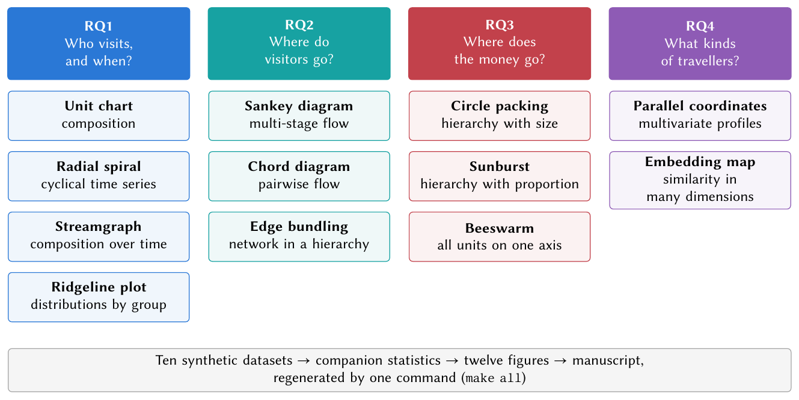
Table 1. Research questions, data shapes and idioms.
| RQ | Data shape | Idiom | Principal encoding | Look for |
|---|---|---|---|---|
| RQ1 | Composition | Unit chart | One square per visitor; colour by region | Dominant origin regions |
| Cyclical time series | Radial spiral | Angle = month; radius = arrivals; colour = year | Recurrent seasonality; contraction and recovery | |
| Composition over time | Streamgraph | Layer thickness = arrivals | Growing and shrinking markets | |
| Distributions by group | Ridgeline plot | Height = share of trips | Centre and spread of stays | |
| RQ2 | Multi-stage flow | Sankey diagram | Band width = travellers | Market-specific pathways |
| Pairwise flow | Chord diagram | Ribbon-end width = directional flow | Hubs and asymmetry | |
| Network in a hierarchy | Edge bundling | Edges routed through the hierarchy; width = trips | Regional circuits and bridges | |
| RQ3 | Hierarchy with size | Circle packing | Area = revenue | Concentration of revenue |
| Hierarchy with proportion | Sunburst | Angle = share of spending | Dominant categories and items | |
| All units on one axis | Beeswarm | Position = spend per visitor; area = visitors | Inequality between provinces | |
| RQ4 | Multivariate profiles | Parallel coordinates | Position on parallel axes | Co-moving markets and trade-offs |
| Similarity in many dimensions | Embedding map | Proximity = similarity | Traveller segments and overlaps |
3.2 Design principles
Five principles apply to every view.
- D1
-
One view, one question. Each view is assigned to exactly one research question, and its caption states what the reader should see before describing how it is encoded.
- D2
-
Colour follows identity, not rank. Each family of categories—origin regions, Thai regions, destination clusters, spending categories and personas—has its own palette, and a category keeps its colour wherever it appears.
- D3
-
Stable order. Categories appear in the same order in every view.
- D4
-
Direct labelling. Labels sit on the marks wherever space permits; legends are used only where direct labels would occlude data.
- D5
-
Pair angle and area with numbers. Views that rely on angle or area, channels judged less accurately than position (Cleveland and McGill 1984), are accompanied by printed values or a companion table.
4 Simulation study design
We report the study following the ADEMP structure (Morris et al. 2019).
4.1 Aims
The study has two aims: (i) to demonstrate that each of the twelve views answers its research question on data of realistic shape; and (ii) to quantify, for every view whose structure has a ground-truth parameter, how accurately the view’s companion statistic recovers the planted structure.
4.2 Data-generating mechanisms
All ten datasets (Table 2) are generated from a single seed (2026), with an independent random stream for each dataset, so that every table is reproducible exactly. The mechanisms are deliberately simple and transparent; their parameters are listed in Appendix A.
Arrivals by market
For each of ten named markets and year , arrivals follow a prescribed trajectory with small multiplicative noise, For seven residual groups , pre-pandemic arrivals interpolate linearly between prescribed 2010 and 2019 levels with noise and a 5% dip in 2014. From 2020 onwards, , with pandemic multipliers for 2020–2025.
Monthly arrivals
Annual totals are allocated to months by with the rounding residual added to December so that months sum exactly to the annual total. The profile equals a common seasonal profile in ordinary years, with year-specific profiles for 2014 (a mid-year dip), 2020–2023 (pandemic collapse and recovery) and 2025.
Length of stay
Nights per trip for market follow a log-normal distribution with median and log-scale , discretised to and renormalised.
Trip flows
For origin region with latest-year arrivals , destination shares are with , and trip-style shares are , where tilts the style mix by origin. Flows are , rounded to the nearest hundred.
Onward travel, provinces and co-visits
Onward trips between six destination clusters scale a prescribed matrix by . For the 77 provinces, 44 have prescribed visitor volumes and spend per visitor; the remainder draw volumes from thousand and spend from THB. Revenue is the product of visitors and spend. Co-visitation among 35 provinces is defined by 76 plausible pairs with multiplicative noise.
Spending structure
A fixed three-level hierarchy with 21 leaves allocates shares of total visitor spending to categories, sub-categories and items.
Traveller personas
A survey of respondents is drawn from a mixture of six personas with prior weights . Each respondent has eight features: log spend per day, nights, age, group size and four activity intensities (beach, shopping, culture and nightlife). Features equal persona means plus noise (log spend, ; log nights, ; age, years; group size, ; activities, , clipped to ); the origin region is drawn from a persona-specific categorical distribution.
Table 2. The ten synthetic datasets.
| Dataset | Content | Rows | Columns |
|---|---|---|---|
arrivals_by_nationality |
Annual international arrivals by market | 272 | 6 |
arrivals_monthly |
Monthly international arrivals, all markets | 192 | 2 |
stay_length |
Distribution of nights per trip by market | 270 | 5 |
nationality_profiles |
Behavioural profiles of fifteen markets | 15 | 9 |
trip_flows |
Origin region, main destination and trip style, latest year | 144 | 7 |
region_flows |
Onward trips between destination clusters | 30 | 5 |
provinces |
Foreign visitors, spend per visitor and revenue by province | 77 | 6 |
province_covisits |
Pairs of provinces visited on the same trip | 76 | 3 |
spending_breakdown |
Three-level structure of visitor spending | 21 | 5 |
traveler_segments |
Individual survey responses with t-SNE coordinates | 1,200 | 10 |
4.3 Estimands
The planted structures, or estimands, are: (E1) the seasonal profile of twelve monthly indices; (E2) the depth of the pandemic shock, measured as the proportional fall in arrivals from 2019 to 2021; (E3) the diversification of source markets between 2019 and 2025; (E4) the median length of stay in nine markets; (E5) destination preferences , comprising 36 shares; (E6) the hub share of onward travel, defined as the share of onward trips that involve Bangkok; (E7) the concentration of revenue across provinces; and (E8) the membership of 1,200 respondents in six personas. For E1, E2, E4, E5, E6 and E8 the data-generating mechanism defines a ground-truth value. E3 and E7 are emergent properties of prescribed inputs, for which we report observed values only.
4.4 Methods
Each view is paired with a companion statistic that summarises what the view shows. The seasonal index of month is the mean ratio of that month to its year’s monthly mean over the pre-pandemic years , Concentration is measured by the Herfindahl–Hirschman index and the Gini coefficient, where is the share of unit and are the values in ascending order; HHI ranges from 0 to 10,000. Monotone association is measured by Spearman’s . For personas, respondents are embedded with t-SNE (perplexity 40, PCA initialisation); separation is summarised by the silhouette coefficient (Rousseeuw 1987) in the embedding and in feature space; and -means (, 20 initialisations) on the standardised features is compared with true membership by the adjusted Rand index (ARI) (Hubert and Arabie 1985).
4.5 Performance measures
For the profile estimand E1 we report Pearson’s and the mean absolute error (MAE) between recovered and planted values. For E4 and E5 we report the MAE and the maximum absolute error in natural units (nights and percentage points). For the scalar estimands E2 and E6 we report planted and recovered values, and for E8 the ARI.
4.6 Implementation and reproducibility
The pipeline is written in Python using NumPy, pandas, SciPy, scikit-learn (Pedregosa et al. 2011) and Matplotlib (Hunter 2007). Every figure is drawn directly in Matplotlib. Idioms absent from standard libraries were implemented for this study: a chord layout following the algorithm of D3 (Bostock et al. 2011), hierarchical edge bundling with cubic B-splines and bundling strength (Holten 2006), and a variable-radius beeswarm placement. Circle packing uses the circlify library. Smoothed curves in the streamgraph and ridgeline plot use monotone piecewise cubic interpolation (Fritsch and Carlson 1980), which passes through every data point without overshoot. The analysis script writes every reported number as a LaTeX macro and every table body as a file, so that the manuscript is regenerated from the data; a test suite checks internal consistency, for example that monthly arrivals sum to annual totals. The complete pipeline runs in about a minute on a laptop.
5 Results
5.1 RQ1: who visits, and when?
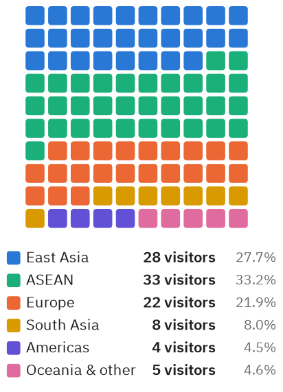
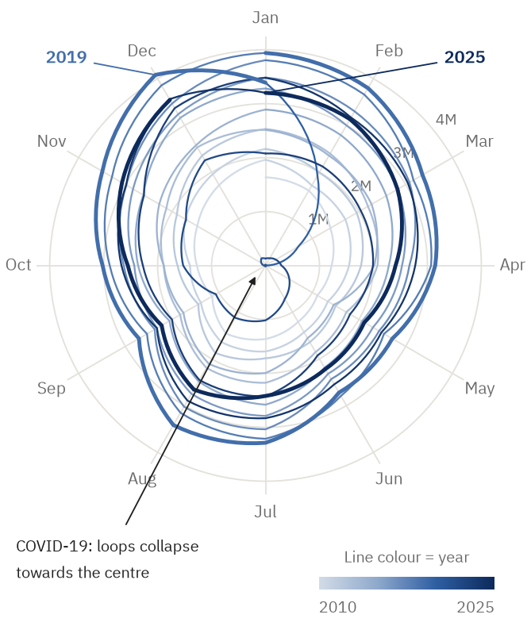
Figure 2 reduces the latest year’s arrivals to one hundred visitors. In the synthetic data, ASEAN is the largest origin region (33 of 100), and the three Asian regions together account for 69 of every 100 visitors. The unit chart conveys composition at a glance, which makes it a suitable opening view for non-specialist audiences.
Figure 3 shows monthly arrivals on a radial spiral. Successive loops expand during the pre-pandemic period, with compound annual growth of 10.2%, until the peak year, 2019 (39.7 million). They then collapse towards the centre in 2021 (0.39 million, a fall of 99.0%) before expanding again to 81.6% of the peak in 2025. The shape of each loop conveys seasonality: the seasonal index peaks in December (1.23) and reaches its minimum in May (0.81), a ratio of 1.52. On a linear time axis the same 192 observations make the recurrent annual pattern considerably harder to discern.
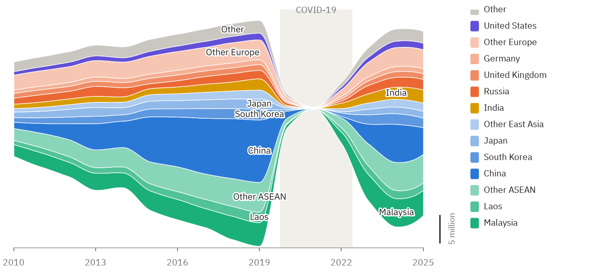
Figure 4 shows how the composition of source markets changed. The largest single market (China) accounted for 27.7% of arrivals in 2019 but 14.4% in 2025, while ASEAN and South Asian markets recovered faster. The HHI of source markets accordingly fell from 1,273 to 943, indicating a more diversified market base. The change is visible directly in the thickness of the layers, without pairwise comparison of annual bar charts.
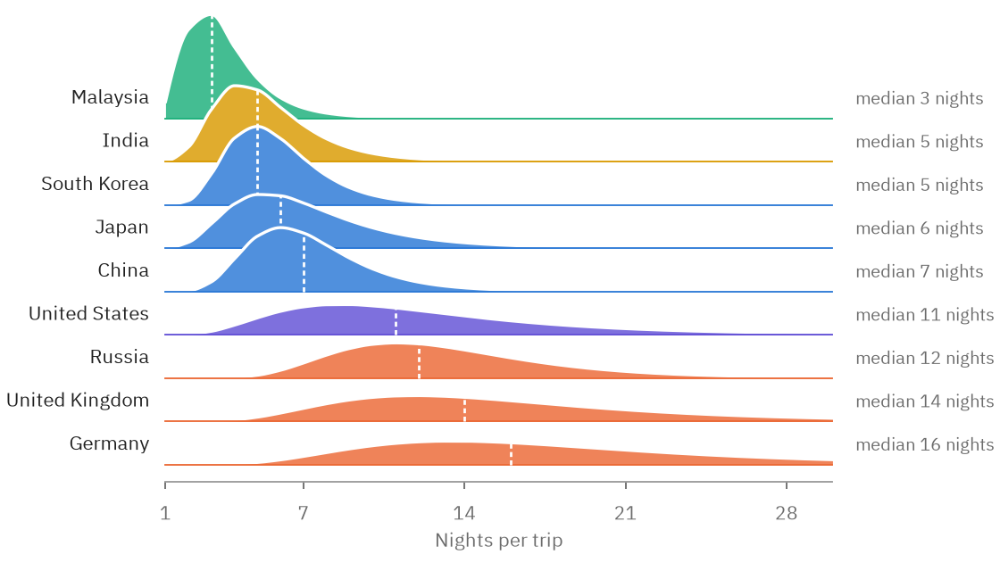
Figure 5 shows that the length of stay differs markedly by market. The median ranges from 3 nights (Malaysia) to 16 nights (Germany), a 5.3-fold difference. Beyond central tendency, the shapes of the distributions are informative: short-haul markets have narrow, right-skewed distributions, whereas European markets have broad distributions with long tails. A single mean per market would conceal the difference.
5.2 RQ2: where do visitors go?
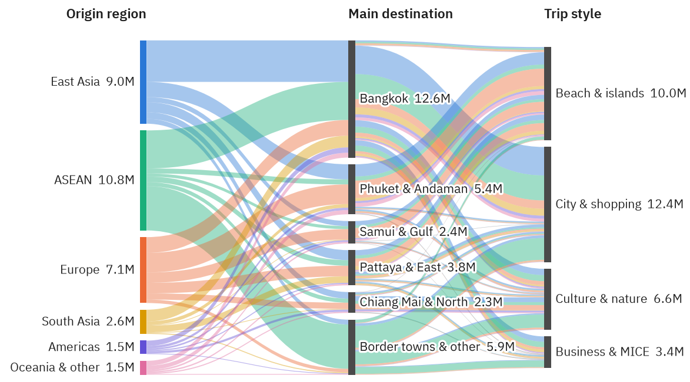
Figure 6 traces each origin region through its main destination to its trip style. Bangkok is the main destination for 38.9% of visitors; city-and-shopping trips account for 38.2% and beach-and-island trips for 31.0%. Because second-stage bands are split by origin, colours run continuously through the diagram and expose market-specific pathways: 29.8% of European visitors head primarily for the Andaman coast, and 44.3% of ASEAN visitors for border towns. The same information in a three-way cross-tabulation is close to illegible.
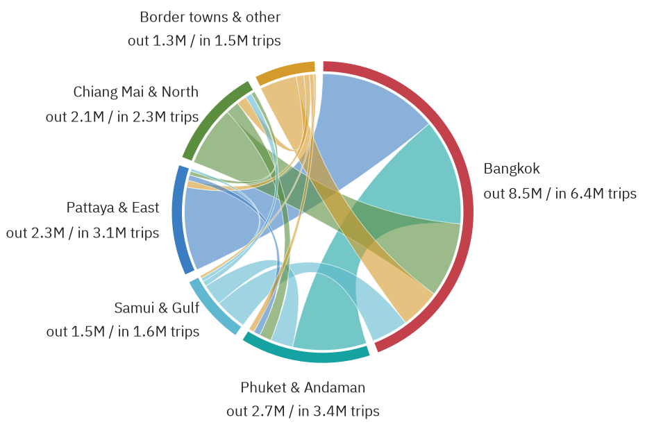
Figure 7 examines movement between destination clusters. Onward trips total 18.3 million, and Bangkok is involved in 81.4% of them. The largest flow runs from Bangkok to Pattaya & East (2.68 million), and the diagram makes its asymmetry visible: the reverse flow is only 1.87 million. The difference in width between the two ends of a single ribbon is the chord diagram’s distinctive advantage over a matrix of numbers.
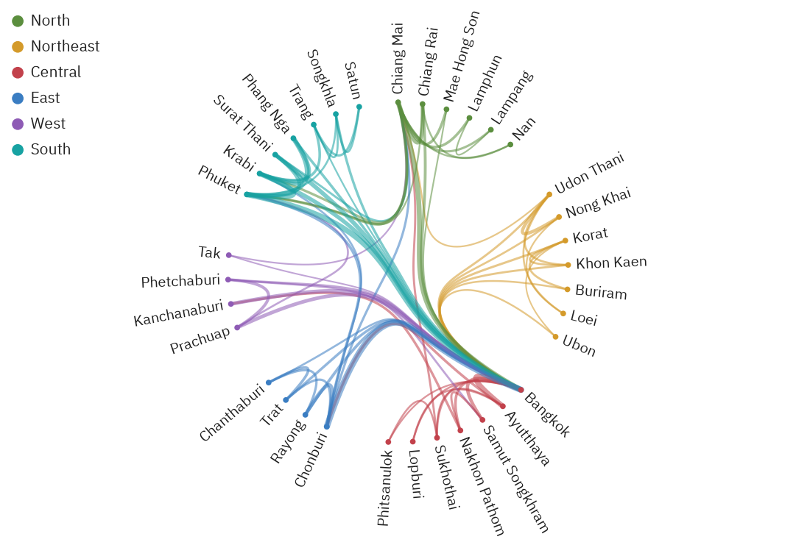
Figure 8 descends to the level of provinces. The co-visitation network has 35 provinces and 76 pairs; Bangkok participates in 29 pairs and accounts for 25.9% of the total weighted degree. Yet 49.1% of the network’s weight lies within regions—in the Andaman triangle and the northern circuit, for example—and the strongest pair not involving Bangkok is Phuket–Krabi (870 thousand trips). Read together, the three views of RQ2 operate at three scales: the market, the destination cluster and the province.
5.3 RQ3: where does the money go?
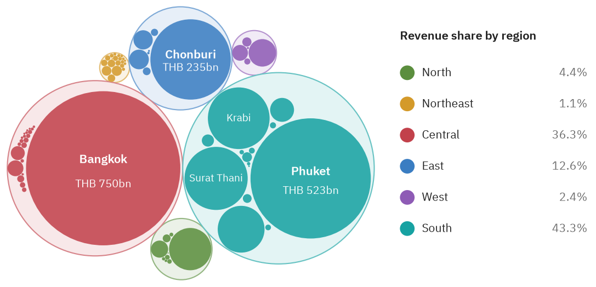
Table 3. The eight provinces with the highest revenue from foreign visitors.
| Province | Region | Visitors (m) | Spend per visitor (THB) | Revenue (THB bn) | Share (%) |
|---|---|---|---|---|---|
| Bangkok | Central | 21.99 | 34,090 | 749.6 | 35.2 |
| Phuket | South | 10.12 | 51,650 | 522.7 | 24.6 |
| Chonburi | East | 7.75 | 30,380 | 235.5 | 11.1 |
| Surat Thani | South | 3.20 | 44,930 | 144.0 | 6.8 |
| Krabi | South | 3.54 | 38,840 | 137.5 | 6.5 |
| Phang Nga | South | 2.03 | 38,990 | 79.2 | 3.7 |
| Chiang Mai | North | 2.82 | 26,950 | 76.0 | 3.6 |
| Prachuap Khiri Khan | West | 1.17 | 28,640 | 33.4 | 1.6 |
Revenue across all provinces totals THB 2,127 billion. Figure 9 and Table 3 show extreme concentration: Bangkok alone accounts for 35.2% and the five leading provinces for 84.1%; the Gini coefficient is 0.92 and the HHI 2,087. The packed circles convey the inequality immediately, but comparisons of area are coarse, hence the companion table (principle D5).
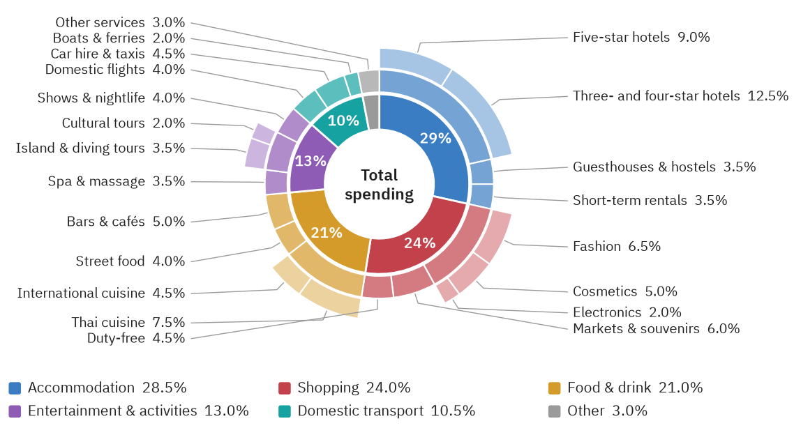
Figure 10 shows that three categories—Accommodation (28.5%), Shopping (24.0%) and Food & drink (21.0%)—account for 73.5% of spending. The outer rings reveal structure hidden within categories: the largest single item is Three- and four-star hotels (12.5%), so that accommodation spending is concentrated in the mid-to-upper segment of the hotel market—information relevant to the design of policies that aim to distribute tourism income more widely.
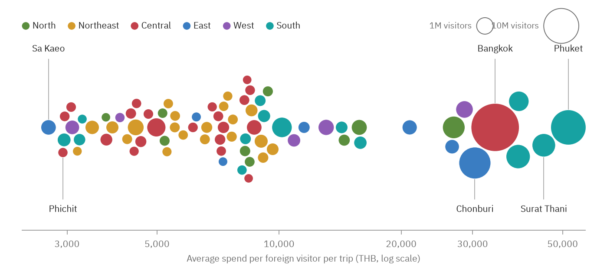
Figure 11 places every province on a single axis. Spend per visitor ranges from THB 2,700 (Sa Kaeo) to THB 51,650 (Phuket), a factor of about 19. Border provinces that receive short visits from neighbouring countries cluster on the left, coastal resort provinces on the right. The Spearman correlation between visitor volume and spend per visitor is 0.49: provinces that attract more visitors also earn more from each visitor, so that concentration operates at two levels at once.
5.4 RQ4: what kinds of travellers are there?
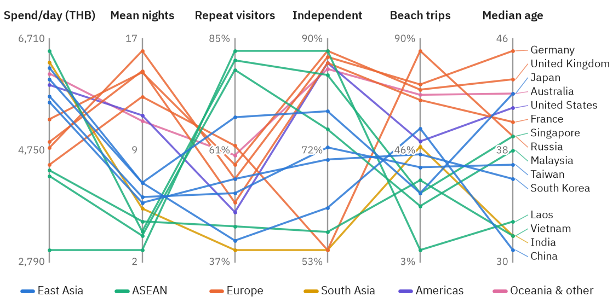
Figure 12 compares 15 markets on six variables simultaneously. Singapore has the highest spend per day (THB 6,500), Laos the lowest (THB 3,000), and Laos also has the highest share of repeat visitors (82%). Across markets, the correlation between nights per trip and spend per day is only : in these data, longer stays do not imply lower daily spending. Crossing polylines make such trade-offs visible in a way a table does not; European markets, for instance, sit high on nights and on the share of beach trips but mid-range or low on daily spend.
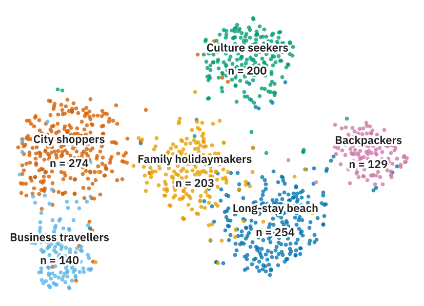
Table 4. Median profiles of the six traveller segments.
| Segment | Share (%) | Spend/day (THB) | Nights | Age | Most common origin | |
|---|---|---|---|---|---|---|
| Long-stay beach | 254 | 21.2 | 4,875 | 12.8 | 41 | Europe |
| City shoppers | 274 | 22.8 | 6,375 | 4.4 | 34 | East Asia |
| Culture seekers | 200 | 16.7 | 3,840 | 7.8 | 37 | Europe |
| Backpackers | 129 | 10.8 | 1,880 | 21.8 | 26 | Europe |
| Business travellers | 140 | 11.7 | 9,660 | 3.2 | 42 | East Asia |
| Family holidaymakers | 203 | 16.9 | 5,220 | 6.4 | 38 | East Asia |
Figure 13 projects the 1,200 respondents into two dimensions; Table 4 gives the median profile of each segment. The largest segment is City shoppers (22.8%). The silhouette coefficient is 0.48 in the embedding but only 0.23 in the original feature space, a reminder that t-SNE accentuates separation (Wattenberg et al. 2016). -means clustering in the original space nevertheless recovers the personas with an ARI of 0.85, which confirms that the clusters exist in the data rather than being an artefact of the projection.
5.5 Recovery of planted structure
Table 5. Recovery of planted structure. MAE: mean absolute error; pp: percentage points; ARI: adjusted Rand index.
| Estimand | View | Recovery | |
|---|---|---|---|
| E1 | Seasonal profile (12 monthly indices) | Radial spiral | ; MAE |
| E2 | Depth of the pandemic shock, 2019–2021 | Radial spiral; streamgraph | planted 99.0%; recovered 99.0% |
| E4 | Length-of-stay medians (9 markets) | Ridgeline plot | MAE nights (max. 0.5) |
| E5 | Destination preferences (36 shares) | Sankey diagram | MAE pp (max. 1.77) |
| E6 | Hub share of onward trips | Chord diagram | planted 81.8%; recovered 81.4% |
| E8 | Persona membership (1,200 respondents) | Embedding map + -means | ARI |
Table 5 summarises recovery. The seasonal index reproduces the planted profile almost exactly (, MAE ), and the recovered depth of the pandemic shock (99.0%) matches its noise-free planted value (99.0%). Median lengths of stay are recovered with an MAE of 0.32 nights, the residual being entirely attributable to the discretisation of stays to whole nights. Destination preferences read from the Sankey diagram deviate from the planted shares by 0.37 percentage points on average, reflecting the noise injected into the flow mechanism. The hub share of onward travel is recovered as 81.4% against a planted 81.8%, and persona membership with an ARI of 0.85. In every case the residual error is attributable to a known source—injected noise, discretisation or rounding—rather than to the view itself. Recovery here is, however, statistical: it establishes that the information needed to see each structure is present in what the view encodes, not that readers will perceive it (Section 6.4).
6 Discussion
6.1 Complementary views across scales
The framework does not prescribe that all twelve views be used in every study. It shows, rather, that a single research question frequently requires more than one scale of analysis. RQ2 is the clearest case: the Sankey diagram answers where each market goes, the chord diagram which destinations feed one another, and edge bundling which provinces are visited together. Each reveals structure that the other two cannot. Likewise, RQ3 requires size (circle packing), proportion (sunburst) and distribution (beeswarm) to distinguish inequality that arises from visitor volumes from inequality that arises from spending per visitor.
6.2 Expressiveness and perceptual accuracy
Elaborate idioms repay their cost when the shape of the data matches the shape of the view—a cycle and a spiral, a flow and a band—but they trade away accuracy in reading individual values. Angles in sunbursts and areas in circle packing are judged less accurately than positions (Cleveland and McGill 1984); distances in a t-SNE map are not distances in the data (Wattenberg et al. 2016); and parallel coordinates become hard to read beyond a few dozen items. The practical implication is to use expressive views to reveal patterns and to confirm the values that matter with tables or position-based charts (principle D5), and to sequence views as a narrative that follows the research questions (Segel and Heer 2010) rather than presenting them all at once.
6.3 From synthetic to empirical data
The pipeline is designed so that real data with the same columns can replace the synthetic inputs without changes to the plotting code. Table 6 lists the kinds of sources that could substitute for each dataset. Flows and co-visitation are typically the hardest to obtain because they require individual-level mobility data, which must be aggregated before use to protect privacy.
Table 6. Candidate empirical sources for each synthetic dataset.
| Synthetic dataset | Candidate source | Caveats |
|---|---|---|
arrivals_by_nationality, arrivals_monthly |
Official monthly statistics of international arrivals by nationality | Definitions of arrivals versus tourists differ |
stay_length, nationality_profiles, spending_breakdown |
Surveys of visitor behaviour and expenditure | Sampling weights and survey error must be reported |
trip_flows, region_flows, province_covisits |
Mobile positioning, card-payment or booking data | Privacy; aggregation required before use |
provinces |
Provincial statistics on visitors and tourism receipts | Definitions of revenue vary by source |
traveler_segments |
Individual-level visitor surveys | Ethical review required |
6.4 Threats to validity
Construct validity. Recovery is measured on companion statistics, not on human readers. That a view encodes the information required to see a structure does not establish that readers perceive it, perceive it quickly or perceive it correctly; establishing this requires controlled user studies. Internal validity. The planted structures were designed by the author, which creates a risk of designing data that flatter the views. Noise is injected at every stage to mitigate the risk, but the planted signals remain strong relative to the noise. External validity. Real data are messier than synthetic data: they contain missing values, changes of definition, small cells and reporting artefacts. The recovery accuracies reported here should therefore be read as upper bounds on what the views can achieve with empirical data.
6.5 Limitations and future work
Four limitations qualify the contribution. First, all data are synthetic, so the results in Section 5 demonstrate the method and say nothing about Thai tourism itself. Second, the views are static, whereas several idioms—parallel coordinates and circle packing in particular—benefit substantially from interaction such as brushing and zooming. Third, the views do not yet display uncertainty in the underlying estimates. Fourth, t-SNE depends on its hyperparameters and random initialisation. Future work should apply the framework to official data, add uncertainty and interaction, and evaluate the framework with its intended readers.
7 Conclusion
This paper has proposed a framework that selects visual idioms by working from research questions through the shape of the data, and has instantiated it as twelve coordinated views for the analysis of inbound tourism, together with a pipeline that reproduces every result with a single command. A simulation study with planted structure showed that each view’s companion statistic recovers the structure it is meant to reveal, with residual errors attributable to known sources, and that views applied to the same question complement one another at different scales. The principal next steps are application to empirical data, the display of uncertainty, interactive versions of the views, and evaluation with the readers for whom they are intended.
Code and data availability
All data analysed in this study are synthetic and are generated by the accompanying code; no empirical data were used. The code, synthetic data, figures and manuscript sources are available at https://github.com/thanatchon36/twelve-views-thai-tourism.
Use of generative AI
A generative AI assistant (Claude, Anthropic) was used to draft the manuscript and the code. The author reviewed, edited and verified all content, including every reference, and takes full responsibility for the work.
References
A Data-generating parameters
This appendix lists the parameters of the data-generating mechanisms described in Section 4.2. All remaining inputs, including the market trajectories , the flow matrices , and , and the province and co-visitation inputs, are defined in the accompanying code.
Table A1. Planted seasonal profile , normalised to a mean of one.
| Jan | Feb | Mar | Apr | May | Jun | Jul | Aug | Sep | Oct | Nov | Dec |
|---|---|---|---|---|---|---|---|---|---|---|---|
| 1.19 | 1.13 | 1.04 | 0.93 | 0.82 | 0.86 | 1.00 | 1.02 | 0.82 | 0.91 | 1.05 | 1.23 |
Table A2. Planted length-of-stay distributions: log-normal median (nights) and log-scale .
| Market | Origin region | ||
|---|---|---|---|
| Malaysia | ASEAN | 3.2 | 0.45 |
| India | South Asia | 5.0 | 0.40 |
| South Korea | East Asia | 5.5 | 0.35 |
| Japan | East Asia | 6.5 | 0.45 |
| China | East Asia | 6.8 | 0.35 |
| United States | Americas | 11.0 | 0.50 |
| Russia | Europe | 12.5 | 0.35 |
| United Kingdom | Europe | 14.5 | 0.45 |
| Germany | Europe | 16.5 | 0.45 |
Table A3. Planted persona parameters: prior weight, mean spend per day (THB), nights, age, group size and activity intensities.
| Persona | Spend | Nights | Age | Group | Beach | Shopping | Culture | Nightlife | |
|---|---|---|---|---|---|---|---|---|---|
| Long-stay beach | 0.22 | 4,800 | 13.0 | 41 | 2.1 | 0.85 | 0.25 | 0.25 | 0.45 |
| City shoppers | 0.24 | 6,500 | 4.5 | 33 | 2.5 | 0.15 | 0.90 | 0.30 | 0.50 |
| Culture seekers | 0.16 | 3,800 | 8.0 | 38 | 2.0 | 0.20 | 0.30 | 0.90 | 0.20 |
| Backpackers | 0.10 | 1,800 | 21.0 | 25 | 1.4 | 0.60 | 0.15 | 0.60 | 0.70 |
| Business travellers | 0.10 | 9,500 | 3.2 | 42 | 1.2 | 0.10 | 0.40 | 0.10 | 0.40 |
| Family holidaymakers | 0.18 | 5,200 | 6.0 | 37 | 4.0 | 0.70 | 0.55 | 0.35 | 0.10 |